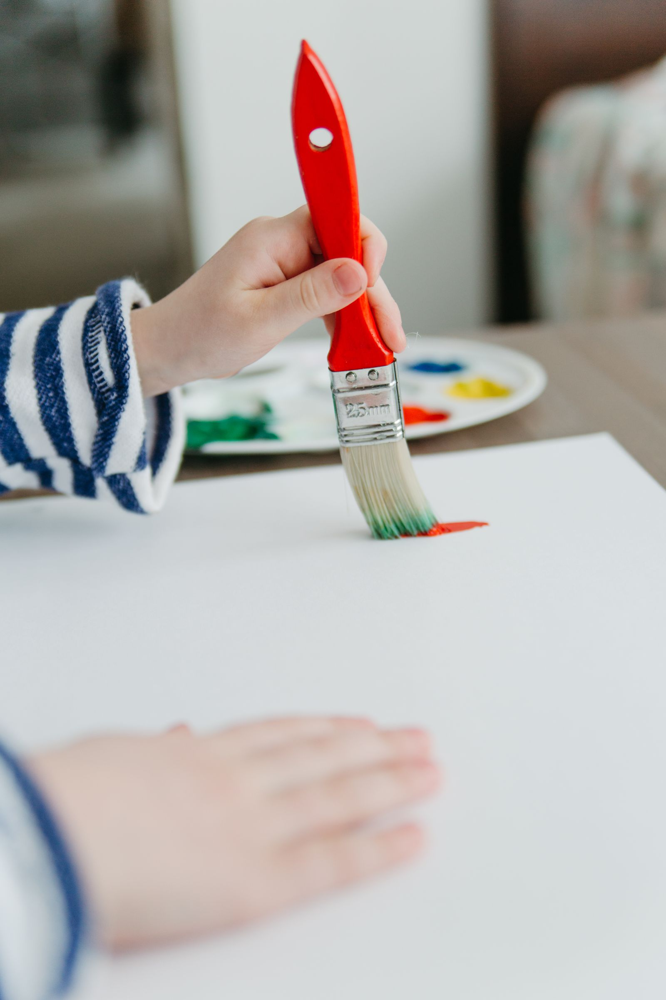

Чтобы на занятие
не ехать час.
«Рядом» помогает родителям найти разовые занятия для ребёнка в шаговой доступности.

Сначала попробовать.
Потом — решить.
Ребёнок просит записать его на рисование, но вы не уверены, надолго ли хватит интереса. Можно начать с одного занятия. В «Рядом» вы выбираете район, возраст и цену, смотрите программу и время.
Вы оплачиваете одно посещение по цене студии. Покупать абонемент для первого знакомства не нужно.
Открыть каталог ↗Что нужно знать
Можно ли здесь записаться на настоящее занятие?
Пока это демонстрационная витрина. Можно подобрать занятие, сохранить его и пройти пробную запись. Заявка студии не отправляется, реальное место не резервируется.
Нужно ли создавать аккаунт ребёнка?
Нет. В демоверсии нужен только выбор возрастной группы. Имя, фотографию и дату рождения ребёнка мы не запрашиваем.
Как работает оплата?
В модели проекта родитель оплачивает отдельное посещение, а студия платит сервису комиссию с заказа. В этой витрине оплату не принимаем.
Есть ли приложение?
Есть учебный Android-прототип версии 0.5.3. Для входа, каталога и бронирований нужен работающий сервер проекта. Прототип использует тестовую оплату.
Скачать Android APK · 19,4 МБ ↓О фотографиях
Фотографии иллюстрируют направления занятий и не представляют реальные студии проекта.
Керамика — cottonbro studio / Pexels · Рисование — Pexels · Наука — MART PRODUCTION / Pexels